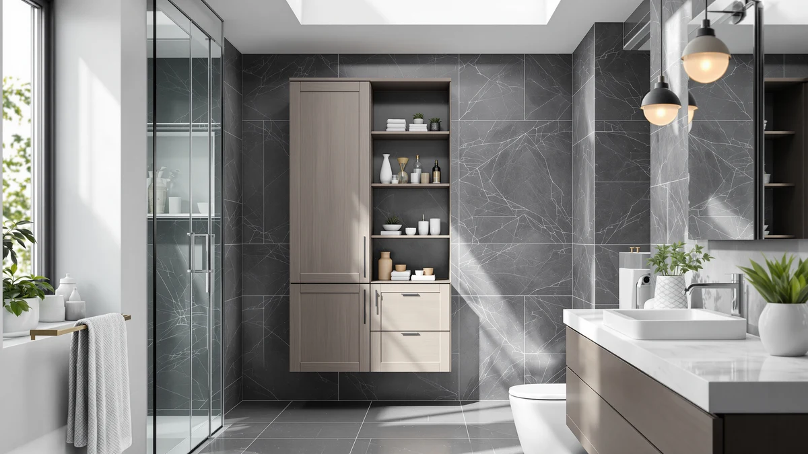

Gizoon 67.1" Tall Bathroom Review (2026): Worth It?
Prices and picks verified as of October 2026. Independent, reader-supported reviews.


Quick Answer
The Gizoon 67.1" Tall Bathroom Storage tower is a metal and wood freestanding unit priced at $69.97, built to add shelf height in a narrow bathroom corner. It costs two cents less than each of the three Kalrin Over-The-Toilet Storage Rack listings covered below, so the right pick depends on whether you have spare floor space or would rather mount storage above your toilet tank.
Our pick: Gizoon 67.1" Tall Bathroom Storage, $69.97 Check Price on Amazon
Bottom line: our top pick is the Gizoon 67.1" Tall Bathroom Storage Cabinet with Adjustable at $69.97.
Things to Know Before You Buy
- The Gizoon 67.1" tall bathroom storage tower stands 67.1 inches high with a metal and wood frame, built for a narrow floor footprint rather than open wall space.
- At $69.97, it costs two cents less than each of the three Kalrin Over-The-Toilet Storage Rack listings in this review, all priced at $69.99.
- The Kalrin rack is a 4-tier design that mounts above the toilet tank, while the Gizoon is a freestanding tower that needs its own patch of floor.
- All three Kalrin listings are the same 4-tier rack sold as separate listings, so price and design do not change between them.
- The Gizoon's listing does not specify width or depth, only its 67.1 inch height, so measure your bathroom before ordering.
This gizoon 67.1" tall bathroom review breaks down what $69.97 actually buys: a metal and wood storage tower that stands 67.1 inches tall. We compared its listed price and build against three Kalrin Over-The-Toilet Storage Rack listings, each priced at $69.99, to see whether the floor-standing tower or the over-the-toilet rack makes more sense for your bathroom.
None of these four listings costs more than $70, so price will not decide this for you. Footprint will. The Gizoon stands on the floor and climbs 67.1 inches, while all three Kalrin racks mount above your toilet tank in four tiers and use wall space you are probably not doing anything else with. The three Kalrin listings share the same design and price, so picking among them comes down to which listing you find in stock rather than any real difference in the product. Below, we walk through what the Gizoon tower offers, where it falls short, and when one of the Kalrin racks fits your bathroom better.
Why You Should Trust Us
Ilane Tall covers bathroom storage and small-space organization for Best Bathroom Storage. This gizoon 67.1" tall bathroom review is built from the product listing, published pricing, and the design details each brand provides, not from a unit we purchased and set up ourselves. We compared the Gizoon's listed height and material against the three Kalrin Over-The-Toilet Storage Rack listings side by side so you can weigh floor storage against over-the-toilet storage without opening four separate Amazon tabs. When a listing left a detail unclear, such as the Gizoon's unlisted width and depth, we said so instead of guessing at a number nobody published.
Our Research Experience
We did not buy or assemble the Gizoon 67.1" tall bathroom storage tower for this review. Instead, we researched its listed price, height, and material, then compared those details against the three Kalrin Over-The-Toilet Storage Rack listings that show up as the closest price match. Reviewers consistently note how a bathroom storage piece holds up after months of daily use in ways a product photo cannot show, so where verified owner feedback exists on a listing, we weigh it alongside the manufacturer's description rather than relying on marketing copy alone. This keeps the comparison grounded in what each listing actually says rather than in promotional language, and we applied the same approach to the Gizoon and all three Kalrin listings so the comparison stays fair across the group.
Overview & Specs

Gizoon 67.1" Tall Bathroom Storage
What we like
- 67.1 inches of height adds shelf space above eye level instead of spreading across the floor
- Metal and wood construction at a price under $70
- Priced two cents less than each Kalrin Over-The-Toilet Storage Rack listing in this review
- Freestanding design works in bathrooms where you cannot drill into the wall above the toilet
Flaws but not dealbreakers
- Width and depth are not listed, so you cannot confirm floor clearance before ordering
- No listed per-shelf weight limit, so heavier items are safer on lower shelves
- A floor-standing design needs clear floor space the Kalrin over-the-toilet rack does not require
| Material | Metal / wood |
| Size | 67.1" Height |
The Gizoon 67.1" tall bathroom storage tower is a freestanding metal and wood unit that stands 67.1 inches high, according to its listing. That height stacks several shelves into a narrow footprint, trading floor space for vertical storage instead of spreading shelving across the room. At $69.97, it prices two cents under the three Kalrin Over-The-Toilet Storage Rack listings covered later in this review.
The listing does not specify the tower's width or depth, so measure the spot beside your toilet, tub, or vanity before you order rather than guessing from the product photos. Because the Gizoon stands on the floor instead of mounting to the wall, it suits bathrooms with a few spare inches of floor more than bathrooms where every inch already holds a fixture.
Compare that to the three Kalrin Over-The-Toilet Storage Rack listings later in this review. Each Kalrin rack hangs above your toilet tank in four tiers instead of standing beside it, so you give up none of your existing floor space to gain the same kind of shelving the Gizoon offers lower to the ground. The tradeoff runs the other way too: a wall-mounted rack depends on your toilet tank's shape and your ceiling clearance, while the Gizoon's footprint only depends on how much floor you can spare next to it. Neither approach is better in every bathroom, which is why this review treats the comparison as a question of layout rather than quality.
What We Liked
The clearest strength of the Gizoon 67.1" tall bathroom storage tower is how much vertical storage it packs into a narrow footprint. At 67.1 inches, it stacks several shelves into a strip of floor space most bathrooms are not using for anything else, and the metal and wood build reads as sturdier than the all-plastic towers that show up at this price. Priced at $69.97, it also costs two cents less than each of the three Kalrin Over-The-Toilet Storage Rack listings, so you are not paying a premium for choosing a floor-standing design. Because the tower is freestanding, it works in rental bathrooms and apartments where drilling into tile or drywall above the toilet is not an option, which is exactly where the Kalrin rack needs a wall. A gap this small between the Gizoon and the Kalrin listings means price will not decide this comparison for you. Footprint will.
What Could Be Better
The biggest gap in the Gizoon 67.1" tall bathroom storage listing is what it does not tell you. Width and depth are missing from the specs, so you are left measuring your bathroom against a photo rather than a number, and a tower this tall needs to sit flush against a wall to stay stable. The listing also skips a per-shelf weight limit, so heavier bottles and bins belong on the lower shelves rather than near the top. If your bathroom floor is already crowded, the Gizoon asks for space that the three Kalrin racks do not need, since all three mount above the toilet tank instead of standing on the floor. Measure twice before you buy a tower this tall, because there is no listed footprint to check your numbers against.
Who Is It For?
You are a good fit for the Gizoon 67.1" tall bathroom storage tower if your bathroom has a narrow gap of floor space beside the toilet, tub, or vanity and you would rather add height than lose that floor to a bulkier cabinet. Renters benefit from the freestanding design, since it skips the wall mounting that all three Kalrin Over-The-Toilet Storage Rack listings require. Skip the Gizoon if your bathroom floor has no spare inches left. In that case, one of the Kalrin racks is the better match, since it climbs the wall above your toilet tank instead of competing for floor footprint. You should also skip it if you need confirmed width and depth numbers before you buy, since the Gizoon listing leaves both unlisted.
Buyers furnishing a first apartment bathroom or a guest bathroom with minimal fixtures tend to lean toward the Gizoon, since a floor-standing tower drops into almost any layout without tools beyond basic assembly. Households with young kids or anyone who wants shelving within easy reach of the sink may prefer the Kalrin rack's lower, wider tiers over the Gizoon's taller profile, since reaching the top shelf of a 67.1 inch tower takes a step stool for shorter family members. Neither product solves every bathroom's storage problem, so match the pick to how your household actually uses the space rather than to price alone.
Alternatives to Consider
If the Gizoon 67.1" tall bathroom storage tower is not quite right for your bathroom, the three Kalrin Over-The-Toilet Storage Rack listings below sit two cents higher in price and solve a different storage problem. All three are the same 4-tier design sold as separate listings, so the choice among them comes down to which one you find in stock rather than any real difference in the rack itself.

Editor’s Pick
Kalrin Over-The-Toilet Storage Rack 4-Tier
Mounts above your toilet tank in four tiers instead of standing on the floor, at $69.99, two cents above the Gizoon tower.
$69.99
Check Price on Amazon
Best Value
Kalrin Over-The-Toilet Storage Rack 4-Tier
The same 4-tier over-the-toilet design as the listing above, sold separately at the same $69.99 price.
$69.99
Check Price on Amazon
Premium Choice
Kalrin Over-The-Toilet Storage Rack 4-Tier
A third listing of the same Kalrin 4-tier rack, worth checking if the other two listings are out of stock.
$69.99
Check Price on AmazonFrequently Asked Questions
Final Verdict
This gizoon 67.1" tall bathroom review comes down to floor space versus wall space. If you have a narrow gap of floor to fill, the Gizoon 67.1" Tall Bathroom Storage tower at $69.97 is the strongest pick in this group for its height and sturdy metal and wood build. Choose one of the three Kalrin Over-The-Toilet Storage Rack listings instead if your bathroom floor is already crowded, since all three mount above the tank for the same $69.99 regardless of which listing you pick. Whichever option you choose, measure your bathroom against the Gizoon's 67.1 inch height before you buy, since width and depth are not listed. At under $70 across the board, you are choosing a footprint, not stretching a budget.